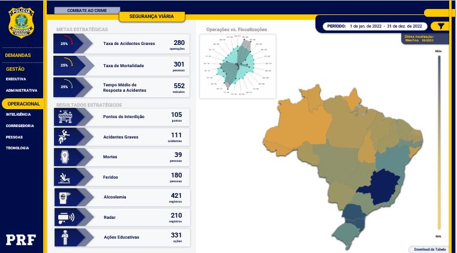

Portfólio de Business Intelligence (BI)
Todos os painéis de Business Intelligence apresentados neste portfólio foram desenvolvidos estritamente em consonância com a Lei Geral de Proteção de Dados (LGPD).
Para garantir a integridade e a privacidade, as demonstrações utilizam exclusivamente:
Dados Abertos (Open Data): Informações públicas e legalmente acessíveis.
Dados fictícios/Simulados: Dados criados para fins de demonstração, sem qualquer correspondência com informações pessoais reais, sensíveis ou de natureza sigilosa.
Desta forma, asseguramos que nenhum dado possa colocar em risco a privacidade de indivíduos ou a confidencialidade de negociações empresariais ou governamentais.
Dashboard Executivo: Indicadores Estratégicos da PRF
Este projeto de Business Intelligence foi desenvolvido para Polícia Rodoviária Federal (PRF), transformando dados operacionais complexos em uma visão estratégica clara e acessível.
Objetivo: Monitorar o desempenho institucional em pilares críticos (Segurança Viária, Ações Educativas e Fiscalização), facilitando a identificação de gargalos e a tomada de decisão baseada em dados.
Processo e Habilidades Técnicas:
- Fontes e ETL: Atuei na extração, tratamento e modelagem de dados provenientes do robusto banco de dados Teradata.
- Modelagem de Dados: Criei uma base de dados otimizada para análise no Power BI, garantindo a solidez e a performance necessárias para um painel executivo.
- Ferramenta:Utilização do Microsoft Power BI para conceber e implementar uma série de dashboards interativos.
Impacto:O painel fornece uma plataforma visual para a liderança da PRF, garantindo que as decisões estratégicas e a alocação de recursos estejam diretamente alinhadas com o cumprimento das metas institucionais.
Detalhes Técnicos do Projeto
| Nome do Painel | Indicadores Estratégicos - Polícia Rodoviária Federal (PRF) |
|---|---|
| Público-Alvo | Diretores e Executivos da Polícia Rodoviária Federal (Painel Estratégico). |
| Ferramenta de BI | Microsoft Power BI (Desenvolvimento e Publicação). |
| Fontes de Dados | Banco de Dados Teradata. |
| Papel no Projeto | Extração, Tratamento, Modelagem de Dados, Desenvolvimento e Publicação. |
| Destaque Técnico | Extração e otimização de grandes volumes de dados do Teradata, utilizando técnicas avançadas de ETL e modelagem de dados (DAX). |
| KPIs e Métricas Principais | Metas Estratégicas, Tipos de Acidente, Tempo Médio de Resposta, Distribuição Geográfica (Regionalização). |
Análise de Acidentes de Trânsito
Dashboard Analítico: Acidentes nas Rodovias Brasileiras
Este painel foi desenvolvido no Microsoft Power BI com o objetivo de fornecer uma visão rápida e clara das principais métricas relacionadas aos acidentes de trânsito nas rodovias brasileiras, utilizando informações públicas do Governo Federal (dados abertos).
Período Analisado: Janeiro, Fevereiro e Março de 2024.
Visão e Impacto do Projeto:
- Foco: Fornecer uma visão detalhada das ocorrências por classificação (Ex: Colisão Frontal, Saída de Leito) e por tipo de causa (Ex: Falta de atenção do condutor).
- Visualização Geográfica: O mapa geográfico é um recurso visual poderoso que demonstra a distribuição dos acidentes por estado.
- Insight Chave: A concentração de pontos no mapa sugere que os estados com maior volume de tráfego e malha rodoviária (como Minas Gerais, São Paulo, Paraná e Rio de Janeiro) registram o maior número de ocorrências, informação essencial para **direcionar políticas de segurança** e fiscalização.
Detalhes Técnicos do Projeto
| Nome do Painel | Acidentes de Trânsito nas Rodovias Brasileiras |
|---|---|
| Objetivo Principal | Análise e monitoramento de KPIs de acidentes para subsídio de políticas de segurança viária. |
| Ferramenta de BI | Microsoft Power BI. |
| Fontes de Dados | Dados Abertos do Governo Federal (Base de Acidentes). |
| KPIs Principais | Total de Acidentes, Total de Vítimas, Acidentes com Vítimas Fatais, Feridos Graves. |
| Destaque Visual | Mapa geográfico para análise de distribuição por UF e visualização de classificação/causa de acidentes. |
| Link para o Dashboard | [Demonstração sob solicitação ou Insira Link Público Aqui] |
Vendas de Seguro - Case Sicoob (Auditor de Dados)

Dashboard de Auditoria e Projeção de Vendas de Seguro
Este projeto de BI para as cooperativas Sicoob, focado em transformar dados complexos de vendas de seguros em inteligência acionável. O objetivo principal é fornecer uma ferramenta estratégica que permita a análise aprofundada, a identificação de outliers e a tomada de decisões assertivas para o crescimento do segmento.
Visão e Impacto do Projeto:
- Foco: Monitoramento do desempenho das vendas de seguros em tempo real, permitindo a detecção de oportunidades de melhoria e a implementação de estratégias mais eficazes.
- Funcionalidade de Auditoria: O painel atua como uma ferramenta de auditoria de dados, destacando variáveis cruciais como a projeção de recebimento mensal e o valor de comissão por apólice.
- Alerta de Anomalias: As observações (presentes no painel original) detalham regras de negócio complexas sobre o cálculo de comissão e a projeção de parcelas, além de alertar sobre **duplicidades** ou inconsistências nos dados.
- Segurança: Os dados apresentados são fictícios, mas estruturados para simular um cenário real de vendas, garantindo a confidencialidade das informações internas da empresa.
Detalhes Técnicos do Projeto
| Nome do Painel | Vendas de Seguro - Auditoria e Projeção (Case Sicoob) |
|---|---|
| Objetivo Principal | Análise de vendas, auditoria de comissões e projeção de recebimento mensal de seguros. |
| Público-Alvo | Diretoria Executiva e Auditoria de Dados. |
| Ferramenta de BI | Microsoft Power BI. |
| Fontes de Dados | Fictícias, simulando um banco de dados transacional de vendas de seguros. |
| KPIs Principais | Quantidade de Apólices, Valor da Comissão (Total e %), Projeção de Vencimento de Parcelas. |
| Destaque Metodológico | Incorporação de regras de negócio (cálculo de comissão, projeção de fluxo de caixa) e tratamento de anomalias de dados (duplicidade de apólice). |
| Link para o Dashboard | [Demonstração sob solicitação ou Insira Link Público Aqui] |
Análise de Alistamento Militar e Incorporação
Dashboard do Perfil do Cidadão no Serviço Militar
Este projeto de BI, desenvolvido com dados abertos, focando na visualização e análise do processo de alistamento militar e incorporação de conscritos às Forças Armadas, abrangendo as Juntas de Serviço Militar no Brasil e as repartições consulares no exterior.
Objetivo e Perfil Analítico:
O objetivo principal é traçar o perfil do cidadão designado para servir, considerando variáveis demográficas e educacionais. O painel atende a um perfil estratégico, permitindo a análise de:
- Escolaridade:Distribuição dos alistados por nível educacional (Fundamental, Médio, Superior, Pós-Graduação, etc.).
- Unidade da Federação (UF) e Sexo: Análise da distribuição regional e de gênero (que, embora predominantemente masculino, considera alistamentos femininos).
- Status: Monitoramento das taxas de Incorporação (10.31%) e Dispensados (89.69%) e seus volumes absolutos.
Destaques do Projeto (Baseado nas Múltiplas Imagens Anexadas):
O projeto demonstra uma solução completa, com diferentes níveis de detalhe:
- Página Geral (`GERAL`): Visão macro de Alistados por UF e Gráfico de *Status* (Incorporado/Dispensado) com detalhe por Escolaridade.
- Página Detalhe (`JSM`): Foco na Junta de Serviço Militar, permitindo a auditoria do volume de incorporações e dispensas a nível municipal/regional e detalhando o estado civil do alistado.
- Conclusão Metodológica: O painel traduz um processo complexo (alistamento, seleção geral, designação, seleção complementar e incorporação) em indicadores visuais claros, tornando a inteligência sobre a força de trabalho militar acessível.
Detalhes Técnicos do Projeto
| Nome do Painel | Alistamento Militar e Incorporação (Nacional e Exterior) |
|---|---|
| Objetivo Principal | Analisar o perfil (Escolaridade, UF, Sexo) dos cidadãos alistados e incorporados às Forças Armadas. |
| Público-Alvo | Comando da Defesa, Juntas de Serviço Militar e Gestores de Recursos Humanos Militares. |
| Ferramenta de BI | Microsoft Power BI. |
| Fontes de Dados | Dados Abertos sobre Alistamento Militar. |
| KPIs Principais | Total de Alistados, % Incorporados/Dispensados, Alistados por UF, Distribuição por Escolaridade. |
| Destaque Metodológico | Criação de filtros dinâmicos para análise por JSM e UF/Município. Detalhamento de métricas de incorporação e dispensa por região. |
| Link para o Dashboard | [Demonstração sob solicitação ou Insira Link Público Aqui] |
ANVISA: Fila de Análise de Processos de Importação (LPCO)
Dashboard de Gestão de Fluxo: Processos LPCO Importação
Este painel de Business Intelligence é uma solução crítica para o acompanhamento da distribuição e análise de processos de Licenças de Importação (LPCO) protocolados no Portal Único PCCE, um módulo chave para o Comércio Exterior brasileiro. O projeto foi desenvolvido com base em dados públicos da ANVISA e visa aumentar a transparência e a eficiência regulatória.
Objetivo, Impacto e Regulação:
- Foco Principal: Monitorar a fila de distribuição para análise técnica, permitindo a visualização da data de entrada (petição primária) e a data de distribuição.
- KPI de Transparência: Permite prever o tempo de espera(em dias) que os processos protocolados aguardam até serem alocados para um técnico da ANVISA, vital para a logística do importador.
- Divisão por Posto: A estrutura do painel reflete a organização interna da ANVISA, segmentando as filas por postos de anuência especializados (PAFME, PAFAL/PAFCO, PAFPS), demonstrando entendimento da regra de negócio complexa.
- Funcionalidade: Permite a consulta específica por Número de LPCO, facilitando o acompanhamento individualizado por parte do usuário externo.
Regulação Aplicada:
O desenvolvimento considerou o disposto na RDC N° 743/2022, que estabelece a classificação de riscos e os prazos para resposta aos requerimentos de atos públicos de liberação, exceto para produtos de controle especial (Portaria SVS/MS 344/1998).
Detalhes Técnicos do Projeto
| Nome do Painel | Protocolo Portal Único PCCE - Fila de Análise LPCO Importação |
|---|---|
| Objetivo Principal | Monitoramento da fila, distribuição e tempo de espera (lead time) de processos de importação sujeitos à anuência da ANVISA. |
| Público-Alvo | Agência Nacional de Vigilância Sanitária (ANVISA), Importadores e Despachantes Aduaneiros.Publicado no portal GOV.BR do Governo Federal |
| Ferramenta de BI | Microsoft Power BI (Painel de Gestão de Filas). |
| Fontes de Dados | Portal Público de Dados da ANVISA (Módulo Importação). |
| KPIs Principais | Total de Processos Aguardando Distribuição, Data da Petição Primária, Distribuição por Posto de Anuência. |
| Destaque Metodológico | Organização de dados de fila de análise e aplicação de regras de negócio (RDC 743/2022) para categorização de postos (PAFME, PAFAL, PAFPS). |
| Link Público | Acessar a Página Oficial do Painel ANVISA |